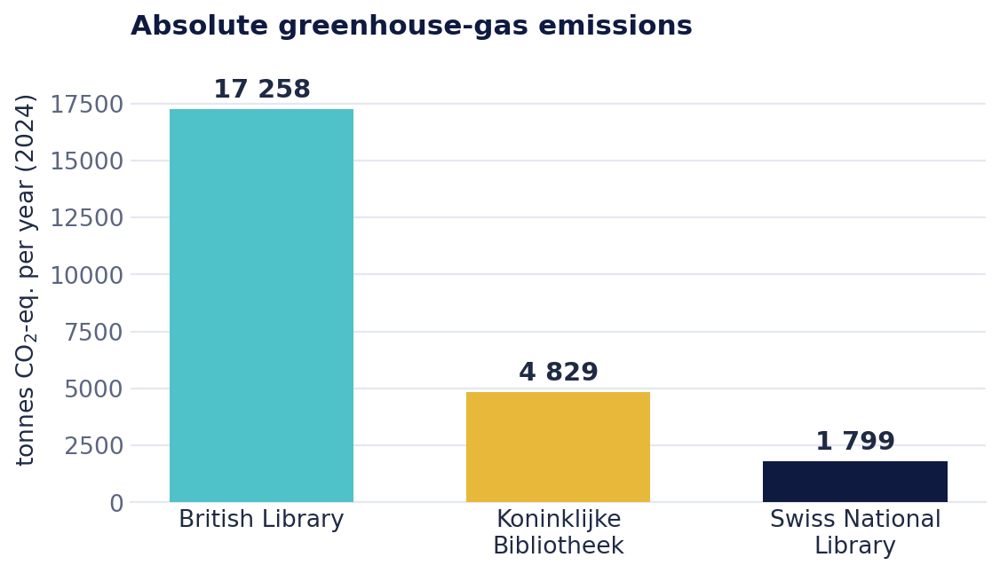
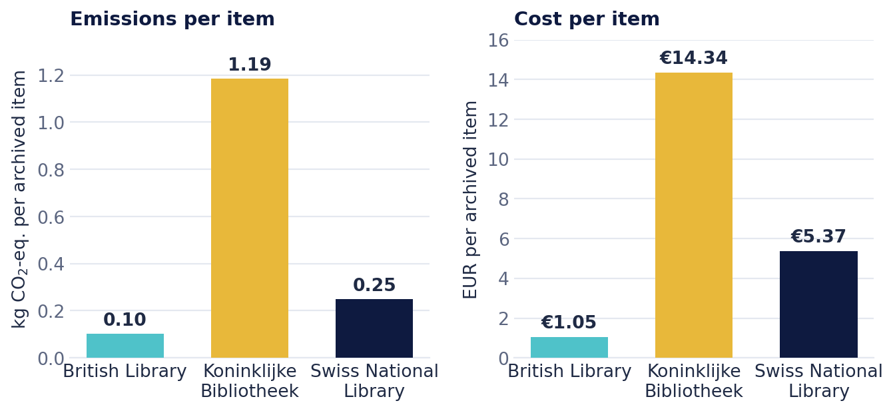
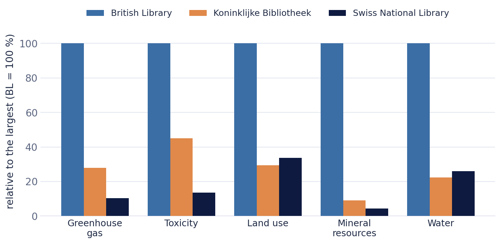

We compared the British Library (UK), the Koninklijke Bibliotheek (Netherlands) and the Swiss National Library as organisations for the year 2024, combining three established methods into one Life Cycle Sustainability Assessment (LCSA).
1. Where the emissions are
In absolute terms, the British Library — by far the largest of the three — has the highest environmental impact across every category. Yet even the largest library's footprint is modest: all three sit at roughly 0.003–0.004 % of their country's emissions, and each emits less than a typical university. Around a third to a half of emissions come from buildings and energy.

2. Bigger, but more efficient per item
Normalise by the size of the collection and the picture flips: the British Library has the lowest impact and cost per archived item, thanks to economies of scale and highly efficient high-density storage. The Swiss National Library also scores low on emissions per item, helped by Switzerland's low-carbon electricity mix.

3. The full environmental picture
Across all five environmental categories — greenhouse gas, human toxicity, land use, mineral resources and water — the largest library carries the highest gross impact. The chart shows each library relative to the largest in each category.

4. A broad, positive social impact
On the social side, all three libraries score well: they are exemplary employers with fair pay, gender balance and active unions, and they reach a large share of their populations — especially online. Twenty indicators were assessed as positive, neutral or negative; a few neutral scores (accessibility, opening hours, documented sustainability targets) could be improved with modest changes.
What it means in practice
Digital access is a powerful lever
Online access expands social reach enormously without raising the environmental footprint proportionally — libraries reach many times their in-person audience online.
Buildings & energy: big lever, shared responsibility
A third to a half of emissions come from buildings and energy. The levers are renovation and procurement — often shared with the property owner rather than the library alone.
Trade-offs made visible
There are tensions between emissions, cost and social reach. The LCSA makes them explicit and gives a basis for informed decisions.
Exemplary employers
All three libraries score strongly on social indicators; some neutral scores can be improved simply through better documentation.
Relevant beyond national libraries
These insights are not only for national libraries. Any galleries, libraries, archives and museums (GLAM) that manage both physical and digital collections face the same trade-offs between environmental impact, cost and public value. The LCSA approach offers a transferable way to measure and compare them — and to make the case for openness and digital access.
Get in touch See the publicationsThe full study, “National Libraries: An organisational Life Cycle Sustainability Assessment”, is currently under peer review.